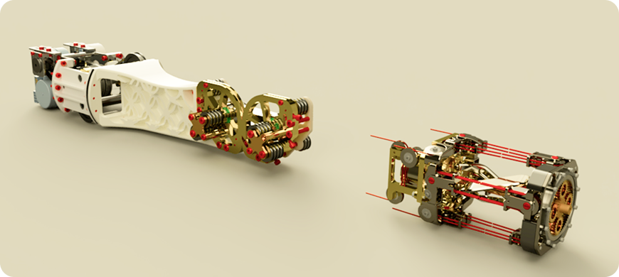

This project involves reverse engineering the robotic wrist joint of the LIMS2-AMBIDEX research robotic arm, developed by Prof. Yong-Jae Kim at KOREATECH.
My interest in animatronics and compliant robotic systems began with early sculptural and design work. To better understand the mechanics behind dynamic movement, I analyzed several humanoid robotic arms and chose the LIMS2-AMBIDEX for reverse engineering. This project allowed me to study cable-driven actuation, lightweight joint design, and mechanical control systems that manage precise motion, focusing on solutions for human-safe robotic arm movement.
Reverse Engineering LIMS2
BACKGROUND

Source References: "Quaternion Joint: Dexterous 3-DOF Joint Representing Quaternion Motion for High-Speed Safe Interaction." Yong-Jae Kim, Jong-In Kim, and Wooseok Jang
Patent application publication: US2021/0197407 A1